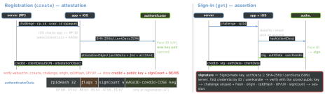

security · folio
In one line: A passkey is a WebAuthn discoverable credential: a key pair made per site by an authenticator (iCloud Keychain, a password manager, a security key). The server keeps only the public key; to sign in, the authenticator signs the server’s one-time challenge together with a hash of the RP ID and the origin the OS/browser vouches for. A look-alike site gets a different RP ID, so there is nothing to phish, replay or leak from a breach.
Download PDF Print view LaTeX source


How it works
- RP ID = a registrable domain (
example.com);login.example.commay use it, a look-alike cannot(unverified). The client (browser, or iOS for apps) writes the origin intoclientDataJSON— the page or app cannot lie about it. - Attestation (at
create) says what made the key (fmt, AAGUID); consumer passkeys usually sendnone(unverified). Assertion (atget) proves possession. - Discoverable (resident) credential ⇒ username-less sign-in: the authenticator returns
userHandle= youruser.id. UP = a human tapped; UV = biometrics / PIN verified — together the two factors in one gesture. - BE/BS flags: backup-eligible / backed-up ⇒ a synced passkey (iCloud Keychain). If stored and received
signCountare both 0, the spec says the check passes. - Cross-device (hybrid): laptop shows a QR; the phone scans, a Bluetooth advert proves it is nearby, then an encrypted tunnel via a relay carries the ceremony(unverified). The passkey never leaves the phone.
Example — iOS (AuthenticationServices)
let p = ASAuthorizationPlatformPublicKeyCredentialProvider(
relyingPartyIdentifier: "example.com")
// register: challenge + userID come from YOUR server
let reg = p.createCredentialRegistrationRequest(
challenge: ch, name: "alice@example.com", userID: uid)
// sign in (username-less): no allowCredentials needed
let get = p.createCredentialAssertionRequest(challenge: ch)
let c = ASAuthorizationController(authorizationRequests: [get])
c.delegate = self; c.presentationContextProvider = self
c.performAutoFillAssistedRequests() // passkeys suggested
// on a field with textContentType = .username
// delegate: ...PublicKeyCredentialAssertion ->
// rawAuthenticatorData, signature, userID, rawClientDataJSON
// entitlement: webcredentials:example.com ; AASA at
// example.com/.well-known/apple-app-site-association
// {"webcredentials":{"apps":["TEAMID.com.example.app"]}}Apple timeline
| iOS 16 | passkeys in iCloud Keychain, AutoFill, cross-device QR sign-in |
| iOS 17 | third-party passkey providers (password-manager apps) |
| iOS 18 | automatic upgrade: registration with requestStyle: .conditional right after a
password AutoFill — passkey created silently, error (no UI) if not eligible |
| iOS 26 | ASAuthorizationAccountCreationProvider (password-less sign-up sheet) ·
ASCredentialUpdater signals (rename, accepted IDs) · import/export between managers |
Web: mediation: "conditional" + autocomplete="username webauthn". WebAuthn Level 3: W3C Recommendation, 25 Aug 2026 (conditional create, signal API, related origins). Android: Credential Manager + assetlinks.json(unverified).
Server checklist
- Challenge: ≥ 16 random bytes, server-stored, single use, short TTL.
type,challenge,origininclientDataJSON;rpIdHash; UP (+ UV if required).- Signature with the stored COSE key (ES256 = alg
-7);signCountif non-zero. - Several passkeys per account;
excludeCredentialsstops duplicates.
Traps
user.id= email: it is stored in the authenticator and returned — use a random opaque handle.- App and web on different RP IDs ⇒ two unrelated credentials. Pick one domain (or L3 related origins).
- Requiring attestation: Apple passkeys give
none(unverified)— you would lock out most users. - AASA served via Apple’s CDN cache — edits are not instant;
?mode=developerfor local testing. - “Passkeys are biometrics sent to the server” — the face never leaves the device; it only unlocks the key.
- Recovery is still your problem: a lost-everything user needs a fallback path you secure too.